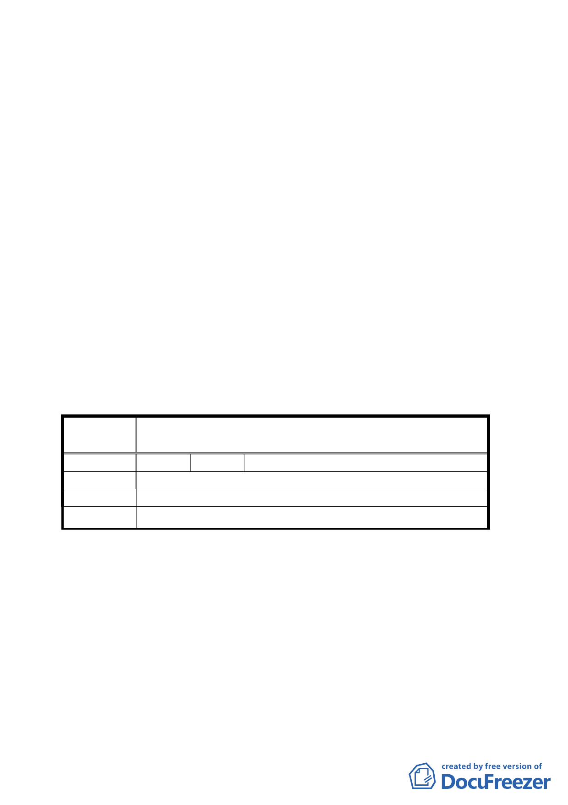

討論事項六
案名：變更臺北市文山區指南段三小段 507 地號土地部分保護區
為國小用地計畫案
說明：
一、本件係市府以 95 年 4 月 3 日府都規字第 09577722003 號函
送到會，並自 95 年 4 月 4 日起公開展覽 30 天。
二、法令依據：都市計畫法第二十七條第一項第四款。
三、變更位置：詳位置圖所示。
四、變更理由及內容：詳計畫書。
五、公民或團體所提意見：如後附綜理表。
決議：本案原則將 507 地號全筆納入計畫範圍修正後通過；修正
後之工程施作工法請建設局於下次會議提出說明後併行確
認。
臺北市都市計畫委員會公民或團體所提意見綜理表
案 名 變更臺北市文山區指南段三小段 507 地號土地部分保護區
為國小用地計畫案
編 號 １ 陳情人 廖金堅
陳 情 理 由 507 地號全筆劃入計畫範圍。
建 議 辦 法 507 地號全筆劃入計畫範圍。
委員會決議 本案原則將 507 地號全筆納入計畫範圍修正後通過。
討論事項七
案名：變更臺北市大同區圓環段三小段五六○、五六○之一、五
六○之二二、五六○之二三地號國小用地為保存區主要計
畫案
擬訂臺北市大同區陳德星堂保存區細部計畫及周邊地區都
市設計管制計畫案
說明：
七